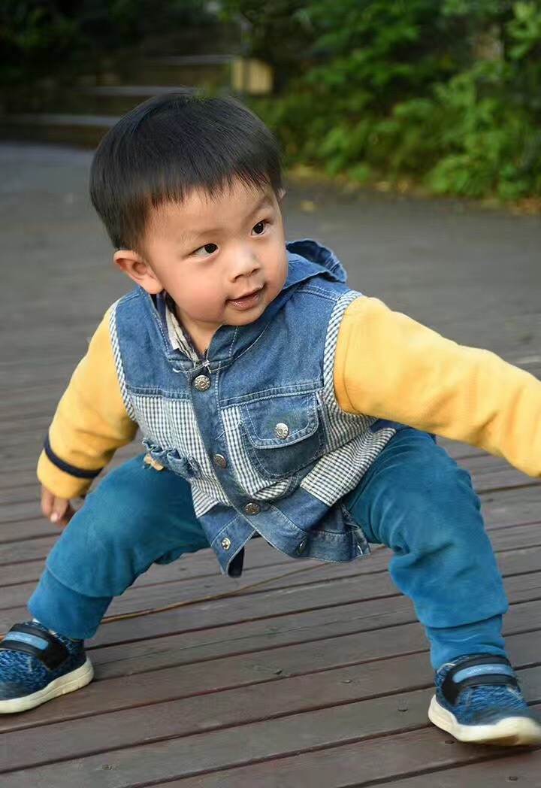

老杨急就章
饿鬼天使
昨天一大早被儿子吵醒，挂钟显示七点半。我简直不敢相信自己的眼睛。头一次他整晚没醒。我头一次睡了一个整觉。
出生这一年多来，他每晚八九点睡觉，凌晨一两点起来喝奶，有时凌晨四五点还要再喝一次。他一饿就特别急，我睡眼朦胧不知身在何处的时候还要百米冲刺一般以最快的速度冲牛奶，不然他就会哭得震天动地。
冲奶的水温和器具来不得半点马虎，需要细心操作，然后慢慢喂他喝完。很多次半夜起来伺候他喝完奶，我却再也睡不着了。严重睡眠不足，第二天整天像个死鱼。然而到了晚上还要再次投入战斗。他慢慢长大，我慢慢耗尽。以命搏命的感觉。
有人问我养孩子是啥感觉。当他穿戴整齐很乖地玩的时候，那就像个天使。但他睡着了最像天使。他的睡相可爱。但更重要的，只有当他睡着了我们才能休息。
杨飞，
2016年10月9日
今天早上偶然翻到去年旧文，发一段上来大家娱乐。图一是一岁两个月，图二是现在的他，一岁八个月。

关注老杨作品：
1，杨飞作品集：www.midphoto.com
2，微信：yangfei789288
3，微信公众号：长沙杨飞
4，新浪微博@长沙杨飞
5，推特Twitter@feiyang17
6，Facebook：yangfei999999@hotmail.com